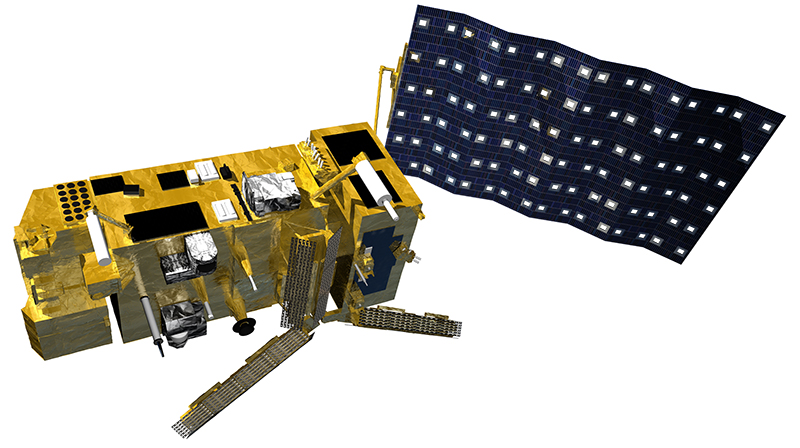
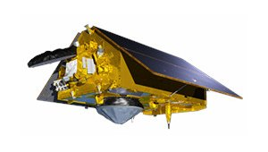
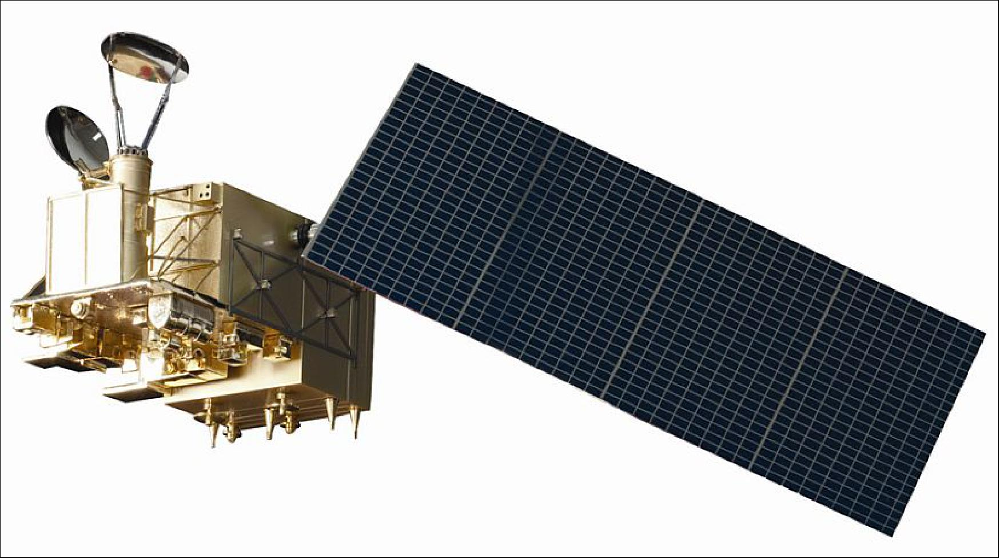

Global Evaluation Suites
The Global Evaluation Suites (GES) are designed to assess the performance of numerical weather prediction
(NWP) models and improve their accuracy. These suites utilise a variety of observational data, including
satellite and ground-based measurements, to evaluate model outputs and identify areas for improvement.
In my case, the majority of the GES verifications are focussing on GNSS-RO observations in the model.
Current Verifications
All quiet here! See below for past and future verifications.
Future Verifications

EPS-SG-A1 - ticket
#TBDLaunched: 12th August 2025
Status: Commissioning (dissemination of data 17/11/25)

Sentinel-6B - ticket
#TBDLaunched: 16th November 2025
Status: Commissioning (dissemination of data ~02/26)

FY-3E - ticket
#TBD(Retrial in 2026 - awaiting CMA processing improvements)
Completed Verifications
FY-3E verification 1 - ticket
#1406
FY-3E verification 2 - ticket
#1406